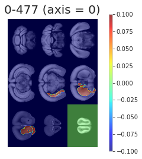

June 06, 2021¶
Motivation: Spatially homogenous parcellation (fMRI).
# HIDE CODE
import os
import ants
import nrrd
import sys
import collections
import numpy as np
import pandas as pd
import nibabel as nib
import networkx as nx
import operator as op
from os.path import join as pjoin
from tqdm.notebook import tqdm
import matplotlib.pyplot as plt
import seaborn as sns
sns.set_style('whitegrid')
# GitHub
git_path = pjoin(os.environ['HOME'], 'Dropbox/git/Ca-fMRI/')
sys.path.insert(0, git_path)
from utils.processing import *
# Allen
allen_ws = pjoin(os.environ['HOME'], 'Documents/workspaces/allen')
allen_path = pjoin(allen_ws, 'MouseConnectivity')
os.makedirs(allen_path, exist_ok=True)
from allensdk.core.mouse_connectivity_cache import MouseConnectivityCache
from allensdk.api.queries.ontologies_api import OntologiesApi
from allensdk.core.structure_tree import StructureTree
# HIDE CODE
def trim_axs(axes, n):
axs = axes.flat
for ax in axs[n:]:
ax.remove()
return axs[:n]
def add_children(g: nx.DiGraph(), structure_tree: StructureTree, src_id: int, level: int):
src = structure_tree.get_structures_by_id([src_id])[0]
children = structure_tree.children([src_id])[0]
for child in children:
src_name = '\n'.join(src['name'].split(' '))
tgt_name = '\n'.join(child['name'].split(' '))
g.add_node(tgt_name, lvl=level)
g.add_edge(src_name, tgt_name)
return g, children
def make_tree_graph(root: str, n_levels: int = 3, structure_tree: StructureTree = None):
if structure_tree is None:
mcc = MouseConnectivityCache(resolution=100)
structure_tree = mcc.get_structure_tree()
structure = structure_tree.get_structures_by_name([root])[0]
g = nx.DiGraph()
g.add_node('\n'.join(structure['name'].split(' ')), lvl=0)
dend = {}
for lvl in range(n_levels):
if lvl == 0:
src_ids = [structure['id']]
else:
new_leaves = []
for i in src_ids:
g, children = add_children(g, structure_tree, i, lvl)
for child in children:
new_leaves.append(child['id'])
src_ids = new_leaves
dend[lvl] = src_ids
return g, dend
def reorient_arr(x: np.ndarray, tr_axes: Tuple = (2, 1, 0)):
if len(x.shape) == 4:
tr_axes += (3,)
return np.transpose(x, tr_axes)[::-1]
import allensdk
print(allensdk.__version__)
2.11.2
Make nx tree¶
from networkx.drawing.nx_agraph import write_dot, graphviz_layout
lvl2c = {
0: 'C7',
1: 'lightskyblue',
2: 'gold',
3: 'yellowgreen',
}
4 levels¶
n_levels = 4
root = 'Cerebrum'
g, dend = make_tree_graph(root, n_levels)
fig, ax = plt.subplots(1, 1, figsize=(13.5, 10))
pos = graphviz_layout(g, prog='neato', root='Cerebrum')
node2c = {i: lvl2c[n[1]['lvl']] for i, n in enumerate(g.nodes(data=True))}
nx.draw(
G=g,
pos=pos,
with_labels=True,
arrows=True,
arrowsize=20,
arrowstyle='->',
width=1.5,
node_size=3500,
font_size=9,
edge_color='k',
node_color=node2c.values(),
ax=ax,
)
fig.tight_layout()
# fig.savefig('cerebrum_3lvls.pdf', dpi=300, bbox_inches='tight')
plt.show()

Load other data¶
manifest_file = pjoin(allen_ws, 'MouseConnectivity', 'manifest.json')
mcc = MouseConnectivityCache(resolution=100, manifest_file=manifest_file)
structure_tree = mcc.get_structure_tree()
root = structure_tree.get_structures_by_name(['root'])[0]
cerebrum = structure_tree.get_structures_by_name(['Cerebrum'])[0]
isocortex = structure_tree.get_structures_by_name(['Isocortex'])[0]
all_experiments = mcc.get_experiments(dataframe=True)
selected_experiments = all_experiments.loc[all_experiments.structure_abbrev == 'SSp-bfd']
experiment_id = 657041814
# download the projection density volume for one of the experiments
pjd, pjd_info = mcc.get_projection_density(experiment_id)
# injection density: number of projecting pixels in injection site / voxel volume
ind, ind_info = mcc.get_injection_density(experiment_id)
# injection fraction: number of pixels in injection site / voxel volume
inf, inf_info = mcc.get_injection_fraction(experiment_id)
# binary mask indicating which voxels contain valid data
dm, dm_info = mcc.get_data_mask(experiment_id)
# template and annotation info
template, template_info = mcc.get_template_volume()
annot, annot_info = mcc.get_annotation_volume()
# in addition to the annotation volume, you can get binary masks for individual structures
root_mask, root_mask_info = mcc.get_structure_mask(root['id'])
cerebrum_mask, cerebrum_mask_info = mcc.get_structure_mask(cerebrum['id'])
cortex_mask, cortex_mask_info = mcc.get_structure_mask(isocortex['id'])
from prettytable import PrettyTable
table = PrettyTable(field_names=['lvl', 'name', '# voxels', 'relative sz'])
m0 = mcc.get_structure_mask(cerebrum['id'])[0]
names = collections.defaultdict(list)
for lvl, struct_ids in dend.items():
for struct_id in struct_ids:
name = structure_tree.get_structures_by_id([struct_id])[0]['name']
if name == 'Layer 6b, isocortex':
continue
names[lvl].append(name)
m1 = mcc.get_structure_mask(struct_id)[0]
table.add_row([lvl, name, m1.sum(), '{:.1f} {:s}'.format(m1.sum() / m0.sum() * 100, '%')])
if lvl < len(dend) - 1:
table.add_row([''] * len(table.field_names))
names = dict(names)
print(table)
+-----+--------------------------------+----------+-------------+
| lvl | name | # voxels | relative sz |
+-----+--------------------------------+----------+-------------+
| 0 | Cerebrum | 275611 | 100.0 % |
| | | | |
| 1 | Cerebral cortex | 221252 | 80.3 % |
| 1 | Cerebral nuclei | 54359 | 19.7 % |
| | | | |
| 2 | Cortical plate | 212402 | 77.1 % |
| 2 | Cortical subplate | 8850 | 3.2 % |
| 2 | Striatum | 45063 | 16.4 % |
| 2 | Pallidum | 9296 | 3.4 % |
| | | | |
| 3 | Isocortex | 123245 | 44.7 % |
| 3 | Olfactory areas | 46478 | 16.9 % |
| 3 | Hippocampal formation | 42679 | 15.5 % |
| 3 | Claustrum | 545 | 0.2 % |
| 3 | Endopiriform nucleus | 2757 | 1.0 % |
| 3 | Lateral amygdalar nucleus | 843 | 0.3 % |
| 3 | Basolateral amygdalar nucleus | 1888 | 0.7 % |
| 3 | Basomedial amygdalar nucleus | 1485 | 0.5 % |
| 3 | Posterior amygdalar nucleus | 966 | 0.4 % |
| 3 | Striatum dorsal region | 26040 | 9.4 % |
| 3 | Striatum ventral region | 8699 | 3.2 % |
| 3 | Lateral septal complex | 3584 | 1.3 % |
| 3 | Striatum-like amygdalar nuclei | 4057 | 1.5 % |
| 3 | Pallidum, dorsal region | 1987 | 0.7 % |
| 3 | Pallidum, ventral region | 3367 | 1.2 % |
| 3 | Pallidum, medial region | 1484 | 0.5 % |
| 3 | Pallidum, caudal region | 1349 | 0.5 % |
+-----+--------------------------------+----------+-------------+
ROI definition (CCF space)¶
"""
npix_x, npix_y, npix_z = template_info['sizes']
left_hemisphere, right_hemisphere = np.ones(template.shape), np.ones(template.shape)
left_hemisphere[..., npix_z//2:] = 0
left_hemisphere = left_hemisphere.astype(bool)
cortex_mask_l = np.logical_and(cortex_mask, left_hemisphere).astype('uint8')
cortex_mask_r = np.logical_and(cortex_mask, ~left_hemisphere).astype('uint8')
"""
"""
ants.from_numpy(template.astype(float)).plot(
overlay=ants.from_numpy(cortex_mask),
overlay_cmap='Greys_r',
overlay_alpha=0.6,
axis=1,
nslices=16,
title='iscortex',
figsize=1,
)
ants.from_numpy(template.astype(float)).plot(
overlay=ants.from_numpy(cortex_mask_l),
overlay_cmap='binary_r',
overlay_alpha=0.6,
axis=1,
nslices=16,
title='iscortex (left hemisphere)',
figsize=1,
)
ants.from_numpy(template.astype(float)).plot(
overlay=ants.from_numpy(cortex_mask_r),
overlay_cmap='binary_r',
overlay_alpha=0.6,
axis=1,
nslices=16,
title='iscortex (right hemisphere)',
figsize=1,
)
"""


"""
ants.from_numpy(template.astype(float)).plot(
overlay=ants.from_numpy(cortex_mask),
overlay_cmap='Greys_r',
overlay_alpha=0.6,
axis=0,
nslices=16,
title='iscortex',
figsize=1,
)
ants.from_numpy(template.astype(float)).plot(
overlay=ants.from_numpy(cortex_mask_l),
overlay_cmap='binary_r',
overlay_alpha=0.6,
axis=0,
nslices=16,
title='iscortex (left hemisphere)',
figsize=1,
)
ants.from_numpy(template.astype(float)).plot(
overlay=ants.from_numpy(cortex_mask_r),
overlay_cmap='binary_r',
overlay_alpha=0.6,
axis=0,
nslices=16,
title='iscortex (right hemisphere)',
figsize=1,
)
"""


from time import time
from copy import deepcopy as dc
from sklearn.cluster import KMeans
import sklearnex
sklearnex.patch_sklearn()
Intel(R) oneAPI Data Analytics Library solvers for sklearn enabled: https://intelpython.github.io/daal4py/sklearn.html
def mask_left_right(mask: np.ndarray, left_right_axis: int = 2):
npix = mask.shape[left_right_axis]
coverage = int(np.ceil(npix/2))
slices_l = tuple(
slice(0, coverage) if i == left_right_axis else slice(mask.shape[i])
for i in range(len(mask.shape))
)
slices_r = tuple(
slice(npix-coverage, npix) if i == left_right_axis else slice(mask.shape[i])
for i in range(len(mask.shape))
)
mask_l = mask.copy().astype(bool)
mask_r = mask.copy().astype(bool)
mask_l[slices_r] = 0
mask_r[slices_l] = 0
return mask_l.astype(bool), mask_r.astype(bool)
def kmeans_parcellation(
mask: np.ndarray,
num_regions: int = 256,
symmetrize: bool = False,
left_right_axis: int = 2,
random_state: int = 42, ):
mask_l, mask_r = mask_left_right(mask, left_right_axis)
if symmetrize:
mask_r_full = mask_r.copy()
mask_l_full = mask_l.copy()
mask_r_full[slices_l] = np.flip(mask_r[slices_r], axis=left_right_axis)
mask_l_full[slices_r] = np.flip(mask_l[slices_l], axis=left_right_axis)
mask_sym = np.logical_and(mask_r_full, mask_l_full)
mask_l = mask_sym.copy().astype(bool)
mask_r = mask_sym.copy().astype(bool)
mask_l[slices_r] = 0
mask_r[slices_l] = 0
# do left
atlas_kmeans, cluster_centers = _do_kmeans(mask_l, num_regions, random_state)
# mirror symmetry clusters to right hemisphere
for region_id in np.unique(atlas_kmeans[atlas_kmeans > 0]):
region_id_r = region_id + num_regions
flipped = np.flip(atlas_kmeans[slices_l], axis=left_right_axis)
atlas_kmeans[slices_r][flipped == region_id] = region_id_r
# get center for right cluster
_ctr = cluster_centers[region_id].copy()
delta = npix/2 - _ctr[left_right_axis]
_ctr[left_right_axis] += 2*delta - 1
cluster_centers[region_id_r] = _ctr
else:
atlas_kmeans_l, cluster_centers_l = _do_kmeans(mask_l, num_regions, random_state)
atlas_kmeans_r, cluster_centers_r = _do_kmeans(mask_r, num_regions, random_state)
atlas_kmeans_r += num_regions
cluster_centers_r = {i+num_regions: ctr for i, ctr in cluster_centers_r.items()}
atlas_kmeans = atlas_kmeans_l.copy()
atlas_kmeans[mask_r] = atlas_kmeans_r[mask_r]
cluster_centers = {**cluster_centers_l, **cluster_centers_r}
output = {
'atlas_kmeans': atlas_kmeans.astype(int),
'cluster_centers': cluster_centers,
'mask_l': mask_l.astype(bool),
'mask_r': mask_r.astype(bool),
}
return output
def _do_kmeans(x, num_regions, random_state):
nonzero_voxels = list(zip(*np.where(x.astype(bool))))
nonzero_voxels = np.reshape(nonzero_voxels, (-1, len(x.shape)))
nonzero_voxels = nonzero_voxels.astype(int)
kmeans = KMeans(
n_clusters=num_regions,
random_state=random_state,
).fit(nonzero_voxels.astype(float))
roi = kmeans.predict(nonzero_voxels.astype(float))
roi_unique = []
for lbl in roi:
if lbl not in roi_unique:
roi_unique.append(lbl)
mapping = {lbl: i+1 for i, lbl in enumerate(roi_unique)}
roi_relabeld = np.zeros_like(roi)
for lbl in roi_unique:
roi_relabeld[roi == lbl] = mapping[lbl]
atlas_kmeans_dict = defaultdict(list)
for voxel, lbl in zip(nonzero_voxels, roi_relabeld):
atlas_kmeans_dict[lbl].append(tuple(voxel))
atlas_kmeans_dict = dict(atlas_kmeans_dict)
atlas_kmeans = np.zeros(x.shape, dtype=int)
for region_id, voxel_list in atlas_kmeans_dict.items():
atlas_kmeans[tuple(zip(*voxel_list))] = region_id
cluster_centers = {mapping[lbl]: kmeans.cluster_centers_[lbl] for lbl in roi_unique}
return atlas_kmeans, cluster_centers
num_regions = 16
parcellation = kmeans_parcellation(
mask=cortex_mask,
num_regions=num_regions,
symmetrize=False,
left_right_axis=2,
)
parcellation['mask_l'].sum(), parcellation['mask_r'].sum()
(61367, 61878)
cortex_mask[..., :57].sum(), cortex_mask[..., 57:].sum()
(61367, 61878)
parcellation['cluster_centers']
{1: array([29.09545674, 23.29410343, 45.47245046]),
2: array([30.93121693, 34.58823529, 50.97385621]),
3: array([30.46142649, 36.8216885 , 34.77971858]),
4: array([41.29056047, 24.62979351, 31.8387414 ]),
5: array([41.97473915, 43.58072488, 23.25562878]),
6: array([46.19735183, 18.12379151, 48.55842791]),
7: array([52.86304636, 29.47629139, 19.76450331]),
8: array([57.58708601, 16.4741482 , 31.81010245]),
9: array([60.7876979 , 44.65585258, 13.77861407]),
10: array([63.32475643, 10.5948039 , 47.78940794]),
11: array([69.2430911 , 24.32881269, 16.95291709]),
12: array([75.57251685, 11.83006153, 29.08116027]),
13: array([78.44709997, 38.44709997, 10.56689012]),
14: array([82.65221774, 8.60458669, 47.27570565]),
15: array([89.80727486, 24.07509534, 16.1839249 ]),
16: array([94.34822715, 13.61660421, 32.0328625 ]),
17: array([28.64169139, 23.56824926, 68.14910979]),
18: array([31.19884639, 34.53673345, 62.27686703]),
19: array([30.37694553, 36.66950389, 78.91585603]),
20: array([41.02176063, 24.2007913 , 81.23071217]),
21: array([41.5670816 , 43.45145228, 90.32890733]),
22: array([45.90954774, 18.32600503, 64.6409129 ]),
23: array([52.00503578, 29.14206202, 93.54943016]),
24: array([57.52610442, 16.2400189 , 81.51051264]),
25: array([59.93751614, 44.59566228, 99.88690937]),
26: array([63.18231091, 10.74722838, 65.42941611]),
27: array([68.38683544, 24.62227848, 96.85291139]),
28: array([75.44415881, 11.95515567, 84.9982862 ]),
29: array([ 77.63257027, 38.94233555, 103.21066358]),
30: array([82.55318627, 8.64362745, 66.57205882]),
31: array([89.2001706 , 24.66761444, 98.25789025]),
32: array([94.3295838 , 13.78008999, 82.20669291])}
for region_id, cluster_ctr in parcellation['cluster_centers'].items():
if region_id > num_regions:
break
cluster_ctr_r = parcellation['cluster_centers'][region_id + num_regions]
error = np.abs(cluster_ctr[:2] - cluster_ctr_r[:2]).sum() / 2
if error > 0.2:
print(
region_id, np.round(error, decimals=3),
np.round(cluster_ctr[:2], decimals=3),
np.round(cluster_ctr_r[:2], decimals=3),
)
1 0.364 [29.095 23.294] [28.642 23.568]
4 0.349 [41.291 24.63 ] [41.022 24.201]
5 0.268 [41.975 43.581] [41.567 43.451]
6 0.245 [46.197 18.124] [45.91 18.326]
7 0.596 [52.863 29.476] [52.005 29.142]
9 0.455 [60.788 44.656] [59.938 44.596]
11 0.575 [69.243 24.329] [68.387 24.622]
13 0.655 [78.447 38.447] [77.633 38.942]
15 0.6 [89.807 24.075] [89.2 24.668]
fig, axes = plt.subplots(2, 3, figsize=(13.5, 10))
for i in range(2):
for j in range(3):
x = parcellation['atlas_kmeans'].copy()
if i == 0:
x[parcellation['mask_r']] = 0
label = 'left\n'
else:
x[parcellation['mask_l']] = 0
x[x != 0] -= num_regions
label = 'right\n'
if j == 0:
title = 'coronal'
elif j == 1:
title = 'axial'
else:
title = 'saggital'
data2plt = np.ma.masked_where(~root_mask.astype(bool), x)
axes[i, j].imshow(data2plt.mean(j), cmap='turbo')
list(map(lambda x: x.set_visible(False), axes[i, j].spines.values()))
axes[i, j].set_xticks([])
axes[i, j].set_yticks([])
if i == 0:
axes[i, j].set_title(title, fontsize=17, y=1.2)
else:
axes[i, j].set_title('')
if j == 0:
axes[i, j].set_ylabel(label, fontsize=17)
fig.tight_layout()
plt.show()

x = parcellation['atlas_kmeans'].copy().astype(float)
x[x == 0] = np.nan
for axis in range(3):
ants.from_numpy(template.astype(float)).plot(
overlay=ants.from_numpy(x),
overlay_cmap='Paired',
overlay_alpha=0.99,
axis=axis,
nslices=9,
title='iscortex ROIs (axis = {:d})'.format(axis),
figsize=1.5 if axis == 2 else 2.5,
cbar=True,
cbar_dx=0.07,
)


x = parcellation['atlas_kmeans'].copy().astype(float)
x[x == 0] = np.nan
for axis in range(3):
ants.from_numpy(template.astype(float)).plot(
overlay=ants.from_numpy(x) * parcellation['mask_l'],
overlay_cmap='Paired',
overlay_alpha=0.99,
axis=axis,
nslices=9,
title='iscortex ROIs (axis = {:d})'.format(axis),
figsize=2 if axis == 2 else 3,
cbar=True,
cbar_dx=0.07,
)


x = parcellation['atlas_kmeans'].copy().astype(float)
vals = []
for region_id in np.unique(x[x > 0]):
vals.append(x[x == region_id].sum() / cortex_mask.sum() * 100)
sns.histplot(vals, kde=True)
<AxesSubplot:ylabel='Count'>

#x = parcellation['atlas_kmeans'].copy().astype(float)
atlas_kmeans_eroded = np.zeros_like(parcellation['atlas_kmeans'])
radius = 5
accepted = 0
rejected = 0
for region_id, ctr in tqdm(parcellation['cluster_centers'].items(), leave=False):
for voxel in list(zip(*np.where(parcellation['atlas_kmeans'] == region_id))):
dist = np.linalg.norm(ctr - voxel)
if dist < radius:
atlas_kmeans_eroded[voxel] = region_id
accepted += 1
else:
rejected += 1
accepted, rejected
(16565, 106680)
fig, axes = plt.subplots(2, 3, figsize=(13.5, 10))
for i in range(2):
for j in range(3):
x = atlas_kmeans_eroded.copy()
if i == 0:
x[parcellation['mask_r']] = 0
label = 'left\n'
else:
x[parcellation['mask_l']] = 0
x[x != 0] -= num_regions
label = 'right\n'
if j == 0:
title = 'coronal'
elif j == 1:
title = 'axial'
else:
title = 'saggital'
data2plt = np.ma.masked_where(~root_mask.astype(bool), x)
axes[i, j].imshow(data2plt.mean(j), cmap='turbo')
list(map(lambda x: x.set_visible(False), axes[i, j].spines.values()))
axes[i, j].set_xticks([])
axes[i, j].set_yticks([])
if i == 0:
axes[i, j].set_title(title, fontsize=17, y=1.2)
else:
axes[i, j].set_title('')
if j == 0:
axes[i, j].set_ylabel(label, fontsize=17)
fig.tight_layout()
plt.show()

x = atlas_kmeans_eroded.copy().astype(float)
x[x == 0] = np.nan
for axis in range(3):
ants.from_numpy(template.astype(float)).plot(
overlay=ants.from_numpy(x),
overlay_cmap='Paired',
overlay_alpha=0.99,
axis=axis,
nslices=9,
figsize=1.5 if axis == 2 else 2.5,
title='iscortex ROIs (axis = {:d})'.format(axis),
title_dy=0.04,
cbar=True,
cbar_dx=0.07,
)



x = atlas_kmeans_eroded.copy().astype(float)
x[x == 0] = np.nan
for axis in range(3):
ants.from_numpy(template.astype(float)).plot(
overlay=ants.from_numpy(x) * parcellation['mask_l'],
overlay_cmap='Paired',
overlay_alpha=0.99,
axis=axis,
nslices=25,
figsize=3 if axis == 2 else 4,
title='iscortex ROIs (axis = {:d})'.format(axis),
title_dy=0.01 if axis == 0 else 0.03,
cbar=True,
cbar_dx=0.07,
)


x = atlas_kmeans_eroded.copy().astype(float)
vals = []
for region_id in np.unique(x[x > 0]):
vals.append(x[x == region_id].sum() / cortex_mask.sum() * 100)
sns.histplot(vals, kde=True)
<AxesSubplot:ylabel='Count'>

np.min(vals), np.max(vals)
(0.43166051361109986, 13.138058339080693)
selected_names = [
'Striatum',
'Pallidum',
'Olfactory areas',
'Cortical subplate',
'Hippocampal formation',
'Isocortex',
]
selected_names
['Striatum',
'Pallidum',
'Olfactory areas',
'Cortical subplate',
'Hippocampal formation',
'Isocortex']
root_mask_l, root_mask_r = mask_left_right(root_mask)
selected_structures = structure_tree.get_structures_by_name(selected_names)
roi_masks = {}
for structure_dict in selected_structures:
print(structure_dict['name'], structure_dict['id'])
if structure_dict['name'] == 'Isocortex':
for region_id_l in range(1, num_regions+1):
region_id_r = region_id_l + num_regions
_mask_l = atlas_kmeans_eroded == region_id_l
_mask_r = atlas_kmeans_eroded == region_id_r
roi_masks['0-{:d}-{:d}'.format(structure_dict['id'], region_id_l)] = _mask_l.astype(bool)
roi_masks['1-{:d}-{:d}'.format(structure_dict['id'], region_id_r)] = _mask_r.astype(bool)
else:
_mask = mcc.get_structure_mask(structure_dict['id'])[0]
_mask_l = np.logical_and(_mask, root_mask_l)
_mask_r = np.logical_and(_mask, root_mask_r)
roi_masks['0-{:d}'.format(structure_dict['id'])] = _mask_l.astype(bool)
roi_masks['1-{:d}'.format(structure_dict['id'])] = _mask_r.astype(bool)
Striatum 477
Pallidum 803
Olfactory areas 698
Cortical subplate 703
Hippocampal formation 1089
Isocortex 315
roi_masks.keys()
dict_keys(['0-477', '1-477', '0-803', '1-803', '0-698', '1-698', '0-703', '1-703', '0-1089', '1-1089', '0-315-1', '1-315-17', '0-315-2', '1-315-18', '0-315-3', '1-315-19', '0-315-4', '1-315-20', '0-315-5', '1-315-21', '0-315-6', '1-315-22', '0-315-7', '1-315-23', '0-315-8', '1-315-24', '0-315-9', '1-315-25', '0-315-10', '1-315-26', '0-315-11', '1-315-27', '0-315-12', '1-315-28', '0-315-13', '1-315-29', '0-315-14', '1-315-30', '0-315-15', '1-315-31', '0-315-16', '1-315-32'])
for key, mask in roi_masks.items():
for axis in range(3):
x = mask.copy().astype('uint8')
# x[x == 0.] = np.nan
ants.from_numpy(template.astype(float)).plot(
overlay=ants.from_numpy(x),
overlay_cmap='Greys_r',
overlay_alpha=0.5,
axis=axis,
nslices=9,
figsize=2,
title='{:s} (axis = {:d})'.format(key, axis),
title_dy=0.01 if axis == 0 else 0.03,
cbar=True,
cbar_dx=0.07,
)


TODO: add these masks using their names (left and right)¶
and then add the isocortex parcellation¶
2 * (num_regions + len(selected_names) - 1)
42
len(roi_masks)
42
Spatial normalization using ANTs¶
config = Config()
func = {}
for subject in tqdm(range(1, config.num_subjects+1), leave=False):
for session in tqdm(range(1, config.num_sessions+1), leave=False):
if subject != 6 or session != 1:
continue
keywords = [
'sub-SLC{:02d}'.format(subject),
'ses-{:d}'.format(session),
'space-individual',
]
# func
for run in range(1, config.num_runs+1):
kws_func = keywords + ['run-{:d}'.format(run), 'task-rest', 'bold']
gen = (x for x in sorted(os.listdir(config.raw_dir)) if all(k in x for k in kws_func))
try:
func_file = pjoin(config.raw_dir, next(gen))
except StopIteration:
continue
x = nib.load(func_file).get_fdata()
func[run] = reorient_arr(x)
# anat
kws_anat = keywords + ['T1w']
gen = (x for x in sorted(os.listdir(config.raw_dir)) if all(k in x for k in kws_anat))
anat_file = pjoin(config.raw_dir, next(gen))
# mask
kws_mask = keywords + ['desc-mask', 'bold']
gen = (x for x in sorted(os.listdir(config.raw_dir)) if all(k in x for k in kws_mask))
mask_file = pjoin(config.raw_dir, next(gen))
# load anat and mask and reorient
moving = nib.load(anat_file).get_fdata()
mask = nib.load(mask_file).get_fdata()
moving *= mask
moving = reorient_arr(moving)
moving_mask = ants.from_numpy(moving).get_mask().numpy()
# images in CCF space
# fixed, CH_mask, ISO_mask = [
# ants.resample_image(ants.from_numpy(arr.astype(float)), [2]*3).numpy().astype(float)
# for arr in [template, cerebrum_mask, cortex_mask]
#]
moving, moving_mask, fixed, CH_mask, ISO_mask = [
ants.from_numpy(arr.astype(float), origin=[0]*3, spacing=[1.0]*3)
for arr in [moving, moving_mask, template, cerebrum_mask, cortex_mask]
]
moving.shape, moving_mask.shape, fixed.shape, CH_mask.shape, ISO_mask.shape, func[1].shape
((78, 64, 64),
(78, 64, 64),
(132, 80, 114),
(132, 80, 114),
(132, 80, 114),
(78, 64, 64, 600))
Register¶
tx = ants.registration(
fixed=fixed,
moving=moving,
mask=moving_mask,
type_of_transform='SyN',
verbose=True,
)
from prettytable import PrettyTable
table = PrettyTable(field_names=['interpolator', 'MI(fixed, warped) / MI(fixed, fixed)'])
interpolators = [
'nearestNeighbor',
'lanczosWindowedSinc',
'gaussian',
'genericLabel',
'bSpline',
'hammingWindowedSinc',
'linear',
'welchWindowedSinc',
'multiLabel',
]
for interpolator in interpolators:
warped = ants.apply_transforms(
fixed=fixed,
moving=moving,
transformlist=tx['fwdtransforms'],
interpolator=interpolator,
)
rel_mi = ants.image_mutual_information(fixed, warped) / ants.image_mutual_information(fixed, fixed)
table.add_row([interpolator, np.round(rel_mi, decimals=3)])
print(table)
+---------------------+--------------------------------------+
| interpolator | MI(fixed, warped) / MI(fixed, fixed) |
+---------------------+--------------------------------------+
| nearestNeighbor | 0.423 |
| lanczosWindowedSinc | 0.438 |
| gaussian | 0.453 |
| genericLabel | 0.423 |
| bSpline | 0.44 |
| hammingWindowedSinc | 0.44 |
| linear | 0.447 |
| welchWindowedSinc | 0.437 |
| multiLabel | 0.332 |
+---------------------+--------------------------------------+
warped = ants.apply_transforms(
fixed=fixed,
moving=moving,
transformlist=tx['fwdtransforms'],
interpolator='linear',
)
warped
ANTsImage (RAI)
Pixel Type : float (float32)
Components : 1
Dimensions : (132, 80, 114)
Spacing : (1.0, 1.0, 1.0)
Origin : (0.0, 0.0, 0.0)
Direction : [1. 0. 0. 0. 1. 0. 0. 0. 1.]
Inv mask transforms¶
roi_masks_fixed = {
lbl: ants.from_numpy(mask.astype(float), origin=[0]*3, spacing=[1.0]*3)
for lbl, mask in roi_masks.items()
}
roi_masks_inv = {
lbl: ants.apply_transforms(
fixed=moving,
moving=mask,
transformlist=tx['invtransforms'],
interpolator='genericLabel',
)
for lbl, mask in roi_masks_fixed.items()
}
for key, mask_inv in roi_masks_inv.items():
for axis in range(3):
# x = mask.copy().astype('uint8')
# x[x == 0.] = np.nan
moving.plot(
overlay=mask_inv,
# overlay_cmap='Greys_r',
overlay_alpha=0.5,
axis=axis,
nslices=9,
figsize=2,
title='{:s} (axis = {:d})'.format(key, axis),
title_dy=0.01 if axis == 0 else 0.03,
)


mask_l_inv = ants.apply_transforms(
fixed=moving,
moving=ants.from_numpy(parcellation['mask_l'].astype(float), origin=[0]*3, spacing=[1.0]*3),
transformlist=tx['invtransforms'],
interpolator='genericLabel',
)
mask_r_inv = ants.apply_transforms(
fixed=moving,
moving=ants.from_numpy(parcellation['mask_r'].astype(float), origin=[0]*3, spacing=[1.0]*3),
transformlist=tx['invtransforms'],
interpolator='genericLabel',
)
root_mask_inv = ants.apply_transforms(
fixed=moving,
moving=ants.from_numpy(root_mask.astype(float), origin=[0]*3, spacing=[1.0]*3),
transformlist=tx['invtransforms'],
interpolator='genericLabel',
)
atlas_kmeans_inv = np.zeros(moving.shape)
for key, mask_inv in roi_masks_inv.items():
if str(isocortex['id']) not in key:
continue
region_id = key.split('-')[-1]
atlas_kmeans_inv[mask_inv.numpy().astype(bool)] = region_id
fig, axes = plt.subplots(2, 3, figsize=(13.5, 10))
for i in range(2):
for j in range(3):
x = atlas_kmeans_inv.copy()
if i == 0:
x[mask_r_inv.numpy().astype(bool)] = 0
label = 'left\n'
else:
x[mask_l_inv.numpy().astype(bool)] = 0
x[x != 0] -= num_regions
label = 'right\n'
if j == 0:
title = 'coronal'
elif j == 1:
title = 'axial'
else:
title = 'saggital'
data2plt = np.ma.masked_where(~root_mask_inv.numpy().astype(bool), x)
axes[i, j].imshow(data2plt.mean(j), cmap='turbo')
list(map(lambda x: x.set_visible(False), axes[i, j].spines.values()))
axes[i, j].set_xticks([])
axes[i, j].set_yticks([])
if i == 0:
axes[i, j].set_title(title, fontsize=17, y=1.2)
else:
axes[i, j].set_title('')
if j == 0:
axes[i, j].set_ylabel(label, fontsize=17)
fig.tight_layout()
plt.show()

TODO: now combine functional data, compute means, and cluster¶
first: try the simple hierarchical then: try louvain